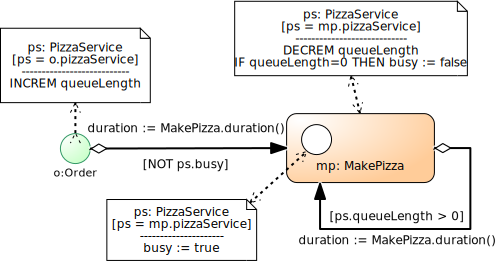

Artificial "token flow" semantics (instead of Event Graph semantics)
No state changes
No conditional, but only probabilistic, branching
Only one actor resource per activity (BPMN swimlanes = "performers")
No alternative resource pools, no pre-emption
What's wrong with BPMN?
A limited concept of "business processes" as isolated "cases"
Overloading/ambiguity of sequence flow arrows
Insufficient integration of the objects that participate in a process
Insufficient support of resource management
No support of processing activities
No convincing formal/operational semantics
What's wrong with DES software packages?
Arena
Simul8
Simio
AnyLogic
Entity
Work Item
Token
Agent
Create
Start Point
Source
Source
Process
Queue+Activity
Server
Service or Seize+Delay+Release
Dispose
End Point
Sink
Sink
There is no common conceptual foundation for Arena/Simio/AnyLogic/etc.
(therefore, it's hard to compare and evaluate them)
They use proprietary terminologies and proprietary diagram languages
They only support their own proprietary form of PN simulation.
No support for Event-Based DES
No support for Activity-Based DES
No formal semantics
The Layers of DPMN
Layer
Concepts
Diagrams
Event-Based Simulation
Event Graphs (Schruben 1983)
Events, Event Scheduling Arrows, Assignments
Object Event Simulation
Basic DPMN
+ Objects w/ State Changes
DPMN with Simple Activities
+ Activities
DPMN with Resource-Constrained Activities
Resource Roles
Resource Cardinality Constraints
Resource Pools
Resource-Dependent Activity Start Arrows
The HiStory of DPMN
2000-2004. Working in the group of Wil van der Aalst, G. Wagner is unhappy about the lack of ontological foundations of Petri-Net-based Business Process Modeling.
WSC 2009. G. Wagner, O. Nicolae and J. Werner. Extending Discrete Event Simulation by Adding an Activity Concept for Business Process Modeling and Simulation.
WSC 2010. G. Guizzardi and G. Wagner. Towards an Ontological Foundation of Discrete Event Simulation.
EOMAS 2011. G. Guizzardi and G. Wagner. Can BPMN Be Used for Making Simulation Models?
WSC 2014. G. Wagner. Tutorial: Information and Process Modeling for Simulation.
WSC 2016. G. Wagner, M. Seck and F. McKenzie. Process Modeling for Simulation: Observations and Open Issues.
WSC 2017. G. Wagner. Tutorial: Information and Process Modeling for Simulation.
JSimE 2018. G. Wagner. Information and Process Modeling for Simulation – Part I: Objects and Events. Journal of Simulation Engineering.
2019. G. Wagner. Information and Process Modeling for Simulation – Part II: Activities and Processing Networks.
Part I: Basic DPMN
Discrete Processes
... are governed by causal regularities, which relate events with (1) state changes of affected objects and (2) follow-up events.
A discrete process consists of a partially ordered set of events.
A business process is a discrete process that "happens in the context of an organization".
Event Graphs (EGs)
... have been proposed for DES modeling by Schruben in 1983.
The integer variable L denotes the length of the input buffer. The Boolean variable B denotes the busy/available status of the "server".
Strengths and Weaknesses of EGs
Strengths:
EGs provide an intuitive visual modeling language.
EGs capture the fundamental event scheduling paradigm.
Weaknesses:
EGs lack a visual notation for (conditional and parallel) branching.
EGs do not support OO state structure modeling (with objects/classes and attributes).
EGs do not support activities.
Object Event Modeling and Simulation (OEM&S)
Since events depend on objects (as their participants), we first need to model object types and then event types.
A process model is based on an underlying information model defining the types of its objects and events.
A conceptual process model describes the causal regularities of a real world process.
A process design model defines event rules that capture causal regularities.
Simulation Design in OEM&S
A simulation design model consists of
an information design model defining object types and event types, e.g., in the form of classes in a UML Class Diagram, such as in an Object Event (OE) Class Diagram.
a process design model defining event rules that represent causal regularities, e.g., in a DPMN Process Diagram.
A simulation design model is a computationally complete specification that can be directly implemented.
Part II: DPMN with Simple Activities
Pizza-Server-1 OE Class Design Model
«rv» = random variable
Pizza-Server-1 DPMN Process Design Model

Exercise 1: Download/Run the Pizza-Server-1 Model
Download the OES Pizza-Server-1 model and extract the ZIP archive file
in a suitable folder (e.g., in "C:\" or in "C:\simulators"). An "OES" subfolder will be created.
Run the Pizza-Server-1 model by pursuing the following steps
Go to the folder OES\js\Core2\Pizza-Server-1.
Open the index.html file in your browser.
Click the button.
Take a look at the resulting statistics output.
If there is anything you'd like to get an explanation for, post your questions on the Chat.
Part III: DPMN with Resource-Constrained Activities
Pizza-Server-2 Design Model
Using a Resource-Dependent Activity Start Arrow
Pizza-Server-1 versus Pizza-Server-2
Exercise 2: Run the Pizza-Server-2 Model
Run the Pizza-Server-2 model by pursuing the following steps
Go to the folder OES\js\Core2\Pizza-Server-2.
Open the index.html file in your browser.
Click the button.
Take a look at the resulting statistics output.
If there is anything you'd like to get an explanation for, post your questions on the Chat.
The Make-and-Deliver-Pizza Model
A pizza service company takes phone orders
for making and delivering pizzas,
with the help of order takers, pizza makers, ovens and a crew of pizza delivery scooter drivers.